5580E anti-theft device
- Path
- Descriptions > 55 ELECTRICAL EQUIPMENT > 5580 SPECIAL ACCESSORIES > 5580E anti-theft device
- Kind
- system description
- Applies to
- all engines; all production periods
- Interactive page
- https://sloeber94.github.io/elrnDB-a156/en/#/3232973
Applies to: all engines; all production periods
The vehicle is fitted as standard with an ALFA ROMEO CODE immobilizer system to protect against theft.
An antitheft system with volumetric protection and an alarm is available on request.
ALFA ROMEO CODE
To increase protection against theft attempts, the vehicles have bee fitted with an electronic engine immobilizer system known as the 'ALFA ROMEO CODE'.
The keys are equipped with an electronic transponder which transmits a coded signal to a special electronic control unit. If it recognizes the code sent, it allows the engine to be started up.
New design system with cipher code
The second generation Code system has the same operating logic as the previous system already used on all Group vehicles, with the exception of the following variants:
- the code used in the dialogue, which takes place via the aerial, between the Code control unit and the key varies each time the engine is started up ('ROLLING CODE') and is in cipher: therefore the code cannot be reproduced, even with an electronic scanner
- Master key eliminated: two keys which have already been 'programmed' for both the Code system and the alarm (remote control), if fitted, are supplied
- Code control unit with direct autodiagnosis
- programming of codes in a DATA BASE managed by PARTS DEPT. Therefore when the new vehicle is handed over to the customer, the service network should not carry out any programming procedure for the Code or the alarm.
Code system components
The Code system consists of:
- two (or more) electronic keys
- a Code electronic control unit, with a serial line for communication with the engine control unit
- aerial in the ignition switch
- CODE Card for the emergency starting procedure.
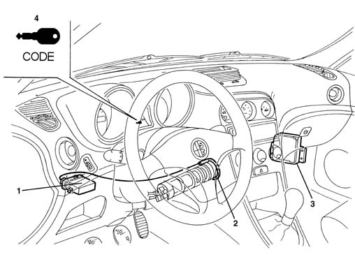
1, CODE electronic control unit 2, Ignition switch with aerial 3, Electronic injection control unit (on some versions the injection control unit is located in the engine compartment) 4, Warning light in instrument panel
Keys
2 keys are supplied, with transponder and remote control (if an alarm is fitted).
The transponder is an electronic device, NOT supplied by the battery, which contains a special 'ID' code (different for each key and not in cipher) and the secret code connected to the vehicle Code control unit.
When the key is inserted in the ignition, in the ON position, the transponder is energized by radio waves from the aerial around the key lock barrel and automatically responds by emitting a code.
The remote control contains a specific code (see DESCRIPTION AND OPERATION: Alarm).
All the codes are then stored in a DATA BASE managed by the PARTS DIVISION.
Therefore, when a new vehicle is handed over to a customer, the Service Network should not carry out any programming procedures.
If a key is mislaid or additional keys are requested, this request should be passed on to the Parts Dept. following the procedures described below.
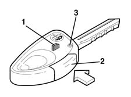
1, Transponder 2, Remote control operating button (see Alarm) 3, Remote control repeater LED (see Alarm)
Code control unit
The main function of the Code control unit is to recognize the key inserted in the ignition switch.
The Code control unit is also responsible for programming the keys and the Code warning light.
The Code control unit contains the secret code used in the dialogue which takes place via the aerial between the Code control unit and the key transponder.
It also contains the codes for the enabled keys (IK1 and ID2) and the fix code (non-cryptic code used in the dialogue between the Code control unit and the engine control unit: when the key is turned to the ON position for the first time, if the key is recognized, the FIX CODE is transferred to the engine control unit).
The Code control unit has a direct diagnostic line, independent from the engine control unit line.
The Code control unit and the engine control unit 'converse' via a serial line with a single cable.
The serial line is the two-way type: this means that the information travels in a sequential fashion from the engine control unit to the Code control unit and viceversa.
Code control unit pin-out
Refer to the illustration
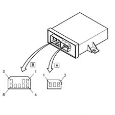
Connector A, 3-way
1 Aerial supply (+)
2 N.C.
3 Aerial supply (-)
Connector B, 8-way
1 N.C.
2 Signal for warning light bulb
3 Direct supply
4 Earth
5 Diagnostic line K
6 Serial connection line with the i.e. control unit
7 Predisposition for external relay (Not connected)
8 Supply controlled by the ignition
For further details see wiring diagram, function E7010 CODE
Dialogue between the code control unit, key and engine control unit
- With the ignition key in the ON position, the engine control unit asks the Code control unit for the FIX CODE
- The Code control unit asks the transponder in the key for ID
- The transponder transmits ID1 to the Code control unit where the ID received is compared with the enabled ones
- If the ID received is amongst the enabled ones, the secret code is checked through a coded dialogue between the Code control unit and the transponder
- If this recognition takes place, the Code control unit sends the FIX CODE to the engine control unit, which checks that it conforms and enables the starting and running of the engine. The Code warning light goes out
If this recognition does NOT take place, the Code control unit sends a special code to the engine control unit which does not allow the engine to be started up. The Code warning light remains on constantly.
The logic of the dialogue between the two control units is summarized in the diagram.
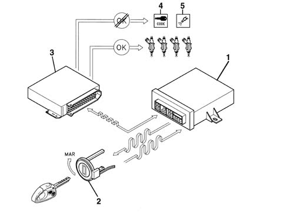
1, CODE electronic control unit 2, Ignition switch with aerial 3, Engine control unit 4, 'CODE failure' warning light in control panel 5, 'Electronic injection failure' warning light in control panel
Code system warning light
The Code warning light in the instrument panel is managed by the Code control unit.
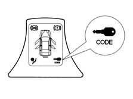
If the ignition key is turned to the ON position, the indicator can signal one of the following conditions:
- on briefly (0.7 s) and then off: key recognized, system operation correct;
- on constantly: the control unit has detected one of the following faults:
- key not recognized by the Code control unit;
- serial line between Code control unit and engine control unit not connected or no communication between the control units
- key programming procedure not carried out (new control unit from PARTS DEPT.).
The operation of the warning light is summarized in the following diagram.
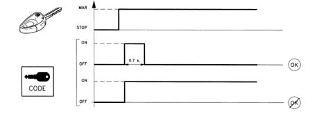
Code card
This is the card which contains:
- the emergency electronic code which allows the vehicle to be started using the Examiner or other diagnostic instrument or, in an emergency, using the accelerator pedal
- the mechanical code.
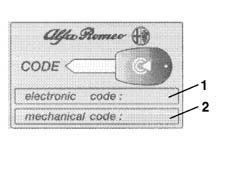
1, Electronic code 2, Mechanical code
The emergency electronic code is also used for the system fault diagnosis and for other operations using the Examiner or other diagnostic equipment. Many of these operations (e.g. 'Programming Keys') can, in effect, only be carried out after this code has been entered. Therefore before any operation, the Customer must be asked for the Code Card.
System self-test
The control unit carries out a continuous self-test of the system's operation. In particular:
- it detects and memorizes any faults
- it recognizes the various components and the type of fault
- it signals the onset of these faults via the special warning light in the instrument panel.
The Code system has its own diagnostic line and therefore it is possible, using the Examiner or other diagnostic equipment, to detect the information stored in the control unit memory.
The control unit provides information on:
- the state of the control unit: it indicates whether the control unit is correctly programmed and operational, if it is unusable, or if the 'Key Programming' procedure has not been carried out (new control unit ordered from PARTS DEPT.)
- the state of the Code warning light: on or off (it makes it possible to identify any irregularities in the warning light connections)
- the status of the key (correctly programmed or not)
- the number of keys enabled.
The control unit then recognizes faults in all the system components:
- Code control unit
- aerial
- key transponder;
- serial line with engine control unit.
Once the faults have been repaired, it is then possible to cancel the faults memorized by the control unit.
It is also possible to carry out the following procedures using the Examiner:
- Key programming
Cancelling keys programmed
The operations described can only be carried out using the Examiner after having entered the emergency electronic code on the Code Card.
Therefore before any operation using the Examiner or other diagnostic equipment, the Customer must be asked for the Code Card.
Emergency starting procedure
The emergency starting procedure makes it possible to start up the engine if there is a problem in the Code system (Code control unit faulty, keys unusable, etc.), i.e. if the engine control unit has not received the go ahead for starting from the Code control unit.
This operation is useful for starting up the engine and driving the vehicle to a Service Centre to have the fault repaired.
This procedure can be carried out using the Examiner or - only in emergencies - using the accelerator pedal:
By acting on the accelerator pedal, the emergency code is transmitted to the injection control unit through the signal detected by the butterfly valve.
Carry out the following operations in the order given:
1 Read the emergency code on the Code Car.
2 Turn the ignition to the ON position; press the accelerator pedal and keep it pressed.
The injection failure warning light should come on for 4 seconds, then go out briefly (150 ms.) and come on again for another 4 seconds.
3 When the warning light goes out, release the accelerator pedal.
4 When the pedal is released, the warning light should start to flash (at a frequency of 0.8 Hz).
5. After a number of flashes equivalent to the first figure of the code on the Code Card, fully depress the accelerator pedal and keep it depressed.
6. The injection warning light should come on again for 4 seconds and then go out to indicate that the first figure has been accepted.
7. When the warning light goes out, release the accelerator pedal.
8. When the pedal is released, the warning light will start to flash again as before (frequency 0.8 Hz).
9. After a number of flashes equal to the second digit, press the accelerator pedal; the warning light comes on for 4 seconds to indicate that the second digit has been accepted
10. Repeat the above for the other figures in the emergency code.
11. When the pedal is released after the last figure has been accepted, the warning light should flash at twice the frequency (1.6 Hz) to indicate that the entire code has been accepted. If, on the other hand, the warning light remains on, this means that the code has been rejected.
12. If the code has been accepted, start up the engine; if this is not the case, turn the key to the OFF position and try the operation again.
The graph illustrates pedal operations and warning light flashes for the code 42173
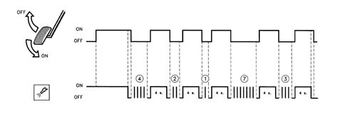
Data base
There is a centralized DATA BASE (for all markets) managed by the PARTS DEPT. for ordering all system components.
The production plant transfers all the details needed into this DATA BASE together with the chassis number of the new vehicle.
This PARTS DATA BASE should be used by the Service Network for ordering replacement components.
The DATA BASE contains various information, including:
- vehicle chassis number
- ID1, ID2, (up to a maximum of 8)
- PASSWORD
- mechanical key code
Intervention procedures
Loss of key(s)
1. Ask the customer for all the keys remaining in his possession. He should also prove that he owns the vehicle by showing the registration document and a valid identity document.
2. Carry of the PROGRAMMING OF THE KEYS remaining using the Examiner or other diagnostic equipment working on the Code control unit. In this way keys which have not been presented will never be able to be used. A list of keys which are still valid will also be printed.
3. Versions with alarm only Programme the remaining REMOTE CONTROLS using the Examiner or another diagnostic instrument, working on the alarm control unit. In this way keys which have not been presented will no longer be able to be used.
4. Connect with FIAT PARTS giving the vehicle chassis number and other details as requested. Place an order for one or several keys, for the vehicle in question.
5.FIAT RICAMBI, by consulting the DATA BASE, using the chassis no., is capable of supplying a key which is:
- the same shape (but indicates that it is a replacement part).
- transponder with new ID3 , but with secret code of the Code control unit of the vehicle in question
- same mechanical code (metal insert)
- new remote control TX3 (only versions with alarm).
In addition, the DATA BASE is updated by the entry of the new ID3 .
6. FIAT PARTS should send the key to the Service Network within 24 - 48 hours.
7. Programme the keys using the Examiner or another diagnostic instsrument, working on the Code control unit, entering both the new key(s) and the previous key(s).
8. Versions with alarm only MEMORIZE THE REMOTE CONTROLS using the Examiner or another diagnostic instrument, working on the alarm control unit, entering both the new key(s) and the previous key(s).
9. Conduct a final check on both the Code system and the alarm system (if present) using the Examiner or another diagnostic instrument.
Requesting a new key
Proceed as described above, skipping step 2 which in this case is superfluous.
Replacing transponder
The transponder is moulded in the key shell. It is therefore not possible to replace it: this ensures greater security against transponder theft.
Replacing key lock barrels
1. Ask the customer for all the keys remaining in his possession. He should also prove that he owns the vehicle by showing the registration document and a valid identity document.
2. CANCEL THE MEMORIZED KEYS using the Examiner or another diagnostic instrument, working on the Code control unit and not the alarm control unit. These keys will never be able to be used again.
3. Connect with FIAT PARTS: giving the vehicle chassis number and other details as requested Place an order for a complete key kit for the vehicle in question.
4. By consulting the DATA BASE and on the basis of the chassis number, FIAT PARTS can make a complete key kit which has:
- the same shape (although indicating that it is a replacement part)
- Transponder with new ID3 . ID4 , but with the secret code for the Code control unit for the vehicle in question.
- new mechanical code (metal insert)
- new remote control codes TX3 . TX4 (versions with alarm only)
A new Code Card, with the previous recovery code but a new mechanical code, is also supplied.
In addition the DATA BASE is updated by the entry of the new ID3 and ID4 and the new mechanical code.
5. FIAT PARTS should send the key kit to the Service Network within 24-48 hours.
6. Programme the KEYS using the Examiner or another diagnostic instrument, working on the Code control unit, entering all the keys received.
7. Versions with alarm only MEMORIZE THE REMOTE CONTROLS using the Examiner or other diagnostic instrument, working on the alarm control unit, entering all the keys received.
8 Conduct a final check on both the Code system and the alarm system (if present) using the Examiner or another diagnostic instrument.
Loss of code card
1. Ask the customer for all the keys remaining in his possession. He must also prove that he owns the car by showing the registration document and a valid identity document.
2. Connect with FIAT PARTS giving the vehicle chassis number and other details as requested. Also place an order for a Code Card for the vehicle in question.
3. By consulting the DATA BASE and on the basis of the chassis number, FIAT PARTS can made a new Code Card which is identical (emergency code and mechanical code) to the lost Card. The Card is then sent to the Service Network point.
4. Hand over the Card to the Cutomer, informing them that it is simply a duplicate. Thus the old Card, if found, will still allow the vehicle to be started, in an emergency situation.
Replacing code control unit
A suspected fault in the Code control unit must always be confirmed by a thorough check carried out using the Examiner or another diagnostic instrument.
1. Ask the customer for all the keys remaining in his possession. He must also prove that he owns the car by showing the registration document and a valid identity document.
2. Connect with FIAT PARTS: giving the vehicle chassis number and other details as requested Place an order for a Code control unit for the vehicle in question.
3. By consulting the DATA BASE and on the basis of the chassis number, FIAT PARTS can make a control unit which has the same secret code and the same 'FIX CODE' as the faulty unit.
In addition, the DATA BASE is updated by the entry of the completed operation.
4. FIAT PARTS should send the control unit to the Service Network point within 24-48 hours
5. Fit the new control unit in place of the faulty one.
6. MEMORIZE THE KEYS using the Examiner or another diagnostic instrument, working on the Code control unit, entering all the keys enabled previously.
7. Conduct a final check on the Code system using the Examiner or other diagnostic equipment.
Replacing engine management control unit
A suspected fault in the electronic fuel injection control unit must always be confirmed by a thorough check carried out using the Examiner or another diagnostic instrument.
1. Ask the customer for all the keys remaining in his possession. He should also prove that he owns the vehicle by showing the registration document and a valid identity document.
2. Connect with FIAT PARTS giving the vehicle chassis number and other details as requested. In addition place an order for an engine management control unit for the vehicle in question.
3. FIAT PARTS must despatch a new, unprogrammed control unit to the Service Network point within 24-48 hours.
4. Fit the new control unit in place of the faulty one.
5. Turn the ignition on (MARCIA); this causes the new control unit to be initialized by the Code control unit, which transmits the 'FIX CODE'.
6. Conduct a final check on he engine control system using the Examiner or other diagnostic equipment.
Applies to: all engines; production: fino a 03/98, da 04/98 a 02/99, da 03/99 a 01/00, da 02/00 a 01/01, da 02/01 a 02/02
ALARMS
The alarm system offers volumetric and perimeer protection for the vehicle.
An electronic control unit monitors the following:
- the closure state of the doors and lids (perimeter control)
- the presence of a moving object inside the passenger compartment (volumetric control)
- the operation of the ignition switch
- the condition of the supply cables for the vehicle and the emergency key.
System components
The alarm system consists of:
- two (or more) keys with remote control
- an electronic control unit with a built in siren
- a remote control receiver
- Volumetric sensors
- an LED (device activated indicator)
- an emergency key (not planned for certain markets)
- a bonnet opening switch (incorporated in the lock)
- a boot opening switch (incorporated in the lock)
- a doors open switch (incoroprated in the locks).
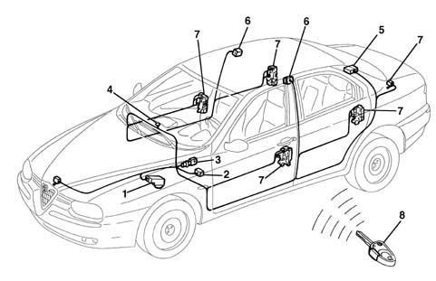
1, Alarm electronic control unit with siren incorporated 2, Diagnostic socket 3, Emergency key 4, LED 5, Receiver 6, Volumetric sensors 7, Doors, boot and bonnet switches 8, Remote control in the key
Keys
2 keys are supplied with a transponder and remote control transmitter.
The transponder is used by the Code system (see DESCRIPTION AND OPERATION: ALFA ROMEO CODE).
The remote control incorporated in the key consists of an electronic circuit and a radiofrequency transmitter supplied by a battery.
Each time the remote control button is pressed, it sends the radio code within a range of 10 metres.
The LED in the key flashes to signal that the button has been operated correctly.
It also signals when the battery is run down by giving a single brief flash each time the actual button is pressed.
If the button remains pressed for more than 80 seconds, the control signal is stopped in order not to run the battery down unnecessarily. The signal is activated by releasing the button and pressing it again.
Each remote control (and therefore each key) contains its own special code.
Up to 5 keys (remote controls) can be programmed in one receiver.
1, Transponder (see Alfa Romeo Code) 2, Remote control operating button 3, Remote control repeater LED
Alarm control unit
An electronic control unit manages the entire system checking all the components.
The main function of the control unit is to check:
- the state of the doors and the lids, through the switches in the locks
- the presence of a moving object inside the passenger compartment, via volumetric sensors.
- the condition of the system supply cables (both directly from the battery and those controlled by the ignition)
- the condition of the supply cables for the emergency key (if fitted)
- the operation of ignition switch
The control unit is equipped with a self-test function which detects and memorizes faults in the control unit itself and the system components and also checks the condition of the connecting cables.
The control unit also memorizes the number of times the alarm is activated and set off.
The control unit operating software may be altered to meet regulations governing the use of alarm systems applicable in different markets. (see 'COUNTRY CODE' programming)
The electronic control unit incorporates the siren.
The siren can operate at different levels according to the programming for the various countries (see description which follows).
The control unit is located at the front, under the Locary on the left of the engine compartment.
Control unit pin-out
Refer to the illustration
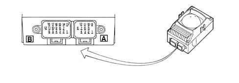
Connector A, 12-way
1 Deterrent LED
2 N.C.
3 Direct supply
4 Emergency key OFF
5, Anti-tilt module supply (Outlets not connected on this version) For further details see wiring diagram, ALARM function E7015 ALARM )
6 Diagnostic line K and connection with receiver
7 Emergency key ON
8 Volumetric sensors supply
9 Control unit earth
10 Anti-tilt module signal (Outlets not connected on this version For further details see wiring diagram, ALARM function E7015 ALARM )
11 Volumetric sensors earth
12 Volumetric sensors signal
Connector B, 18-way
1 Right branch direction indicators control
2 Left branch direction indicators control
3 Preparation for external relay contact (Outlets not connected on this version.
For further details see wiring diagram, ALARM function E7015 ALARM )
4 N.C.
5 N.C.
6 N.C.
7 Direction indicators supply
8, Left front door signal
9, Right front door signal
10 N.C.
11 N.C.
12 Supply controlled by the ignition
13 Emergency key supply
14 Doors open signal (check panel operation) (Outlets not connected on this version) For further details see wiring diagram, ALARM function E7015 ALARM )
15 Rear left door signal
16 Rear right door signal
17 Boot lid signal
18 Bonnet lid signal
Receiver
The receiver is an electronic device which receives the transmitter signal. It is located in the rear part of the roof panel.
It is connected to the control unit via the serial line and directly manages the following system functions:
- it receives, decodes and manages the remote control signals
- it locks and unlocks the doors
- it memorizes the codes for enabled transmitters.
The receiver contains the PASSWORD used to programme (enter or delete) the various codes in the transmitters.
The receiver also has its own autodiagnostic function which detects and memorizes faults in the actual receiver and the components connected to it and it checks the condition of the connecting cables.
Receiver pin-out
Refer to the illustration
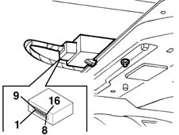
Connector, 16-way
1 Direction indicators control (*)
2 Diagnostic line K and connection with alarm control unit
3 Direct supply
4 Earth
5 Door 'unlocking' control
6 Door 'locking' control
7 Supply controlled by the ignition
8 Courtesy lights control (Outlets not connected on this version)
9 Electric windows control (Outlets not connected on this version)
10 N.C.
11 N.C.
12 N.C.
13 N.C.
14 N.C.
15 N.C.
16 N.C.
For further details see wiring diagram, function E7015 ALARM and E3040 CENTRAL LOCKING
Emergency key
(not planned for certain Markets)
The emergency key for deactivating the system is located on the left of the dashboard, next to the junction unit, in a position that is easily and quickly accessible.
It makes it possible to exclude the system, for example in the case of repair operations:
- by turning the key in an anti-clockwise direction, the system is deactivated: emergency key in OFF position
- by turning the key in a clockwise direction, the system is activated: emergency key in ON position.
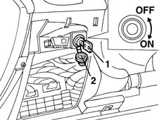
1, Emergency key 2, Protective cover
Switches
The same switches as for the central locking system are used to control the doors and lids. For further details see wiring diagram, function E3040 CENTRAL LOCKING
There is, however, a special switch in the bonnet lid lock.
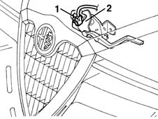
1, Bonnet lid opening switch 2, Bonnet lid lock
Volumetric sensors
The volumetric sensors allow additional surveillance because they check that there are no intrusions in the vehicle. These are located on two central car pillars
Both are 'dual' sensors, i.e. each consists of a transmitter and a receiver
The wave sent by a transmitter should reach the receiver of the other sensor and viceversa: if this is not the case, an alarm signal is sent to the control unit.
One pair monitors the front part of the passenger compartment, the other pair controls the rear, as shown in the following diagram: (E = transmitter C = receiver).
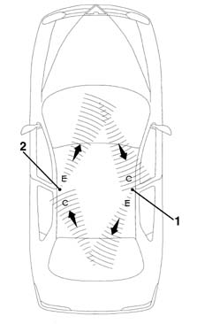
1, Right-hand side volumetric sensor 2, Left-hand side volumetric sensor
Deterrent led
The dissuasion LED is located in the dashboard, in the centre above the air vent and signals the state of the system (on, off, etc.) plus any faults.
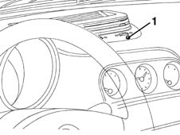
1, Deterrent LED
System operation
Switching on
it is only possible to switch on the alarm with the ignition key in the OFF or PARK positions or with it extracted.
The alarm is activated by pressing the button in the remote control. It has an operating range of about 10 metres.
When the command has been given, the door locks are locked, the siren sounds and, at the same time, the direction indicators come on for about 2.5 seconds; the deterrent LED also flashes. the deterrent LED also flashes.
Switching off
The alarm is switched off by pressing the remote control button.
When the command has been given, the doors are unlocked, the siren sounds briefly twice and, at the same time, the direction indicators flash twice.
Switching on with siren excluded
The operation of the siren can be excluded during the surveillance stage: when switching on, press the remote control button for more than 4 seconds.
After the auditory signals connected with the engagement, there are 5 auditory signals in quick succession to indicate that the siren has been excluded.
Next time it is switched on, the exclusion procedure should be repeated, if the siren is to be excluded once again.
Excluding the system
The system can be deactivated with the emergency key (OFF position) if:
- the remote control batteries are run down
- the system is faulty
- the vehicle is not used for long periods (more than 3 weeks).
Surveillance stage
During the 'surveillance' stage (vehicle closed and alarm switched on), the deterrent LED flashes at a frequency of 0.8 Hz and, in this state, the system:
- surveys the closing of the doors, bonnet and boot lid
- detects the condition of the connecting cables for the positive from the battery and earth
- detects the condition of the connecting cables for the emergency key
- detects the unauthorized insertion of the ignition key;
- surveys movements inside the passenger compartment (volumetric surveillance).
Alarm state
The alarm comes into operation when one of the surveillance sensors detects an irregular situation.
The alarm state (if the cause of the alarm persists) can be recognized as follows:
- the siren is activated (for a maximum of three cycles lasting 26 seconds)
- the direction indicators are activated for about 4-5 minutes (only in countries where the law permits);
It is possible to escape from the alarm situation:
- by pressing the remote control button;
- by deactivating the emergency key (in this case, the control unit remains in the 'surveillance' condition).
This second procedure should only be used if it is not possible to escape from the alarm situation by pressing the remote control button.
Inhibiting volumetric surveillance
It is possible to inhibit the volumetric surveillance, before switching the system on. Proceed as follows:
- starting with the ignition key in the ON position, turn in quickly to OFF, ON and then OFF.
The exclusion of the volumetric surveillance is confirmed by the deterrent LED coming on for 2 seconds.
When the ignition key is next switched ON (for more than 30 seconds) the volumetric surveillance will be re-enabled. This period of 30 seconds allows, for example, the electric windows to be closed, which, if they have been left open by mistake, will maintain the exclusion of the volumetric surveillance.
Alarm self-activation (only belgian and uk markets)
Cars with alarms programmed for the Belgian and UK markets are equipped with self-activation function.
This function ensures that the alarm is automatically partly engaged (the doors are not locked): the alarm is engaged 28 seconds after the customer leaves the vehicle, in other words after the system has detected the following sequential conditions:
- ignition key turned from ON to OFF;
- last open door opened and then closed.
The opening of any door, or the bonnet lid or the boot lid, before the delay period (28 seconds) has elapsed stops the automatic engagement. The closure restores the counting, starting, however, from zero.
To regain possession of the vehicle after the auto-engagement, simply press the remote control button once.
Signalling of remote control batteries discharged
The signal involves the remote control LED giving one brief flash when the button is pressed.
When this signal occurs, the batteries should be replaced as soon as possible.
After the batteries have been replaced, the LED will work properly after the second time the button is pressed.
The deterrent LED also signals that the remote control batteries are run down by coming on constantly for a maximum of 2 minutes when the system is switched off.
'country code' programming
The control unit is capable of adapting its operation to the laws governing alarm systems in force in the various markets. There are different operating modes ('COUNTRY CODE') available in the actual control unit memory for the sound of the siren and the flashing of the direction indicators. These functions are sometimes excluded.
The 'EEC' operating mode is selected in production.
To change this setting, it is possible to use the special procedure using the Examiner or other diagnostic equipment.
Alternatively, and only in the case of an emergency, the following procedure can be used:
1 Check that the emergency key is switched ON.
2 Turn the ignition key to the ON position.
3 Open the bonnet (front) lid.
4 Turn the ignition key from ON to OFF.
5. Within 15 seconds, press the bonnet lid button 7 times in quick succession. This manoeuvre should be carried out in less than 10 seconds. The last time the button is pressed, keep it pressed;
6. 5 brief auditory signals (5 in 2 seconds) followed by one long one (lasting 2 secnods) indicate the entry in the operating mode programming.
7. Release the bonnet lid button.
8 Within the next 10 seconds, press and release the button a number of times equivalent to the desired country identification number, given in the table below (each time the button is pressed there will be an auditory confirmation signal).
9. Wait for 10 seconds; an auditory signal lasting a second will indicate the exit from the programming mode system.
COUNTRY CODE TABLE
Code, Country
1, Default (EEC)
2, United Kingdom
3, Belgium
4, Switzerland
5, Holland
6, WORLD
System self-diagnosis
Both the control unit and the receiver are equipped with a self-test function.
When the alarm is switched on, the operation of the system is continuously checked.
- when the system is switched on an autodiagnosis is carried out which can be recognized by the LED flashing, in accordance with the table below:
FLASHING MODE, MEANING
4 4 Hz (= 4 flashes in a second): No fault detected
8 8 Hz (= 8 flashes in a second): Door/bonnet/boot open or switch faulty
Light on constantly: Volumetric sensors faulty
If a fault is detected, the component in question is excluded from the surveillance and an auditory warning signal is emitted one second after engagement.
- when the system is switched off, this is indicated by the LED for the sensor which set off the alarm during the surveillance flashing, in accordance with the details in the table below:
NO. PULSES, Component in alarm status
1 1 Impulse, Right front door
2 Impulses, Left front door
3 3 Impulses, Right rear door
4 4 Impulses, Left rear door
5. 5 Impulses, Volumetric sensors
6. Impulses, Bonnet lid
7. Impulses, Boot lid
8 Impulses, Supply controlled by the ignition
9 Impulses, Supply cables cut
10 Impulses: At least 3 simultaneous causes of the alarm
Light on constantly: Remote control batteries run down
An impulse consists of a flash at a frequency of 1 Hz (1 flash per second).
If several causes for the alarm are detected, the blink codes occur in orders, with an interval of 1.5 secs in between.
If the ignition key is turned to the ON position, the signal is interrupted.
Use of the examiner or other tester
Ths system has its own diagnostic line and it is therefore possible to detect information stored in the control unit and receiver memories using the Examiner or other diagnostic equipment.
The control unit and the receiver provide information concerning their tate and recognize any irregularities in all the system components and connections.
Once the faults have been repaired, it is posible to cancel the faults memorized by the control unit.
It is also possible to carry out the remote control programming procedures, using the Examiner, following the instructions given below.
Manual diagnosis
It is possible to carry out a manual diagnosis of the entire system, in cases of emergency, if an Examiner or other diagnostic equipment is not available.
Proceed as follows:
1 Close the doors, windows, boot lid and bonnet.
2 Check that the emergency key is switched ON.
3 Turn the ignition key to the ON position.
4 Open the bonnet.
5. Turn the ignition key from ON to OFF.
6. Within 15 seconds, press the bonnet lid button 7 times in quick succession. This manoeuvre should be carried out in less than 10 seconds. Release the button the last time it is pressed;
7. 5 brief auditory signals and a flash of the direction indictors indicate the entry in the 'manual diagnosis' mode.
8. After several seconds the result of the volumetric sensors fault diagnosis is given:
- if the direction indicators flash once only, there is a fault in the volumetric sensors.
- if the direction indicators flash 3 times and there are three auditory signals, then there are no faults with the volumetric sensors.
9. Operate the switches for the doors and lids, one at a time:
- if the direction indicators and the deterrent LED flash briefly for each change in state of the switch, then there is no fault with the switch in question
- if there is no signal from the direction indicators and the deterrent LED for each change in state of the switch, and there are no auditory signals, then there is a fault with the switch in question.
10. Exit the manual diagnosis procedure by turning the ignition key to the ON position. There will be an auditory signal from the siren (500 msecs) and the direction indicators will flash (2.5 secs); it is also possible to exit from manual diagnosis by doing nothing for 30 secs
The exit is signalled by the direction indicators coming on for about 2.5 secs and an auditory signal.
Data base
There is a centralized DATA BASE (for all markets) managed by the PARTS DEPT. for ordering some system components.
- receiver
- keys
The production plant transfers all the details needed into this DATA BASE together with the chassis number of the new vehicle.
This PARTS DATA BASE should be used by the Service Network for ordering replacement components.
The DATA BASE contains various information, including:
- vehicle chassis number
- ID1, ID2, (up to a maximum of 8)
- PASSWORD
- mechanical key code
Intervention procedures
Loss of key(s)
1. Ask the customer for all the keys remaining in his possession. He should also prove that he owns the vehicle by showing the registration document and a valid identity document.
2. Carry out the PROGRAMMING OF THE remaining KEYS using the Examiner or other diagnostic equipment, working in the Code control unit. In this way keys which have not been presented will never be able to be used. A list of keys which are still valid will also be printed.
3. Programme the remaining REMOTE CONTROLS using the Examiner or another diagnostic instrument, working on the alarm control unit. In this way keys which have not been presented will no longer be able to be used.
4. Connect with FIAT PARTS giving the vehicle chassis number and other details as requested. Place an order for one or several keys, for the vehicle in question.
5. By consulting the DATA BASE and on the basis of the chassis number, FIAT PARTS can make a key which has:
- the same shape (but indicates that it is a replacement part).
- Transponder with new ID3 , but with secret code of the Code control unit of the vehicle in question
- same mechanical code (metal insert)
- new remote control code TX3 .
In addition, the DATA BASE is updated by the entry of the new ID3 .
6. FIAT PARTS should send the key to the Service Network within 24 - 48 hours.
7. Programme the keys using the Examiner or another diagnostic instsrument, working on the Code control unit, entering both the new key(s) and the previous key(s).
8. MEMORIZE THE REMOTE CONTROLS using the Examiner or another diagnostic instrument, working on the alarm control unit, entering both the new key(s) and the previous key(s).
9. Conduct a final check on both the Code system and the alarm system using the Examiner or other diagnostic equipment
Requesting a new key
Up to 5 keys (remote controls) can be programmed in one receiver.
Proceed as described above, skipping step 2 which in this case is superfluous.
Replacing key lock barrels
1. Ask the customer for all the keys remaining in his possession. He should also prove that he owns the vehicle by showing the registration document and a valid identity document.
2. 2.CANCEL THE MEMORIZED KEYS using the Examiner or another diagnostic instrument, working on the Code control unit and not the alarm control unit. These keys will never be able to be used again.
3. Connect with FIAT PARTS giving the vehicle chassis number and other details as requested. Place an order for a complete key kit for the vehicle in question.
4. By consulting the DATA BASE and on the basis of the chassis number, FIAT PARTS can make a complete key kit which has:
- the same shape (but indicates that it is a replacement part).
- Transponder with new ID3 . ID4 , but with the secret code for the Code control unit for the vehicle in question.
- new mechanical code (metal insert)
- new remote control codes TX3 . TX4 .
A new Code Card, with the previous recovery code but a new mechanical code, is also supplied.
In addition the DATA BASE is updated by the entry of the new ID3 and ID4 and the new mechanical code.
5. FIAT PARTS should send the key kit to the Service Network within 24-48 hours.
6. Programme the KEYS using the Examiner or another diagnostic instrument, working on the Code control unit, entering all the keys received.
7. MEMORIZE THE REMOTE CONTROLS using the Examiner or other diagnostic instrument, working on the alarm control unit, entering all the keys received.
8 Conduct a final check on both the Code system and the alarm system using the Examiner or other diagnostic equipment
Replacing the receiver
A suspected fault in the receiver should always be confirmed by carrying out a thorough check using the Examiner or other diagnostic equipment.
1. Ask the customer for all the keys remaining in his possession. He must also prove that he owns the car by showing the registration document and a valid identity document.
2. Connect with FIAT PARTS giving the vehicle chassis number and other details as requested. Place an order for a receiver.
3. FIAT PARTS should send a new, unprogrammed, receiver.
4. Fit the receiver in place of the fault one.
5. PROGRAMME THE REMOTE CONTROLS using the Examiner or other diagnostic equipment, working on the alarm control unit and not the Code control unit, entering all the keys present.
6. Conduct a final check on the alarm system using the Examiner or other diagnostic equipment.
Replacing the alarm control unit
A suspected fault in the alarm control unit must always be confirmed by a thorough check carried out using the Examiner or another diagnostic instrument.
If the alarm control unit is replaced, it is NOT necessary to PROGRAMME THE REMOTE CONTROLS using the Examiner or other diagnostic equipment, but simply to carry out the simplified CONTROL UNIT PROGRAMMING procedure which 'passes over' all the data and codes in the receiver to the new control unit.
If the control unit is replaced, conduct a final check on the alarm system using the Examiner or other diagnostic equipment.
Applies to: all engines; production: da 03/02 a 09/03, da 10/03
ALARMS
The alarm system offers volumetric and perimeer protection for the vehicle.
An electronic control unit monitors the following:
- the closure state of the doors and lids (perimeter control)
- the presence of a moving object inside the passenger compartment (volumetric control);
- the operation of the ignition switch;
- the condition of vehicle supply leads
System components
The alarm system consists of:
- two (or more) keys with remote control
- an electronic control unit with a built-in siren
- a remote control receiver
- volumetric sensors
- an anti-tilt sensor
- a deterrent LED (device activated indicator)
- a bonnet opening switch (incorporated in the lock)
- boot opening switch (incorporated in the lock)
- doors open switch (incoroprated in the locks).
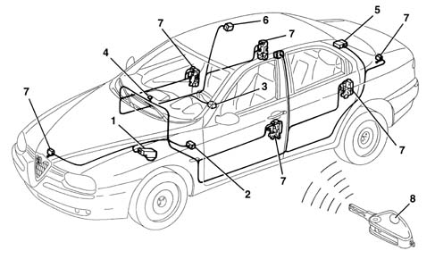
1 - Alarm electronic control unit with siren incorporated 2 -Diagnostic socket 3 - Anti-tilt sensor 4 - Deterrtent LED 5 - Receiver 6 - Volumetric sensors 7 - Doors, boot and bonnet switches 8 - Remote control in the key
Keys
2 keys are supplied with a transponder and remote control transmitter.
The transponder is used by the Code system (see DESCRIPTION AND OPERATION: ALFA ROMEO CODE).
The remote control incorporated in the key consists of an electronic circuit and a radiofrequency transmitter supplied by a battery.
Each time the remote control button is pressed, it sends the radio code within a range of 10 metres.
The LED in the key flashes to signal that the button has been operated correctly.
It also signals when the battery is run down by giving a single brief flash each time the actual button is pressed.
If the button remains pressed for more than 80 seconds, the control signal is stopped in order not to run the battery down unnecessarily. The signal is activated by releasing the button and pressing it again.
Each remote control (and therefore each key) contains its own special code.
Up to 5 keys (remote controls) can be programmed in one receiver.
1 - Locking/unlocking button 2 - Boot opening button
Alarm control unit
An electronic control unit manages the entire system checking all the components.
The main function of the control unit is to check:
- the state of the doors, boot and bonnet lids, through the switches in the locks
- the presence of a moving object inside the passenger compartment, via volumetric sensors.
- attempts to tilt the vehicle, through the special sensor
- the condition of the system supply cables (both directly from the battery and those controlled by the ignition).
- the operation of ignition switch.
The control unit is equipped with a self-test function which detects and memorizes faults in the control unit itself and the system components and also checks the condition of the connecting cables.
The control unit also memorizes the number of times the alarm is activated and set off.
The control unit operating software may be altered to meet regulations governing the use of alarm systems applicable in different markets. (see 'COUNTRY CODE' programming)
The electronic control unit incorporates the siren.
The siren can operate at different levels according to the programming for the various countries (see description which follows).
The control unit is located at the front, under the wheel arch liner on the left of the engine compartment.
Control unit pin-out
Refer to the illustration
Connector A, 12-wayPINSIGNAL1Deterrent LED control2N.C.3Direct power supply4N.C.5Anti-tilt module supply6Diagnostic line K and connection with receiver7N.C.8Volumetric sensors supply9ECU earth10Anti-tilt module signal11Volumetric sensor earth12Volumetric sensors signal
Connector B, 18-way
PIN | SIGNAL |
|---|---|
1 | Right branch direction indicators control |
2 | Left branch direction indicators control |
3 | N.C. |
4 | N.C. |
5 | N.C. |
6 | N.C. |
7 | Direction indicators supply |
8 | Left front seat signal |
9 | Right front door signal |
10 | N.C. |
11. | N.C. |
12. | Supplied controlled by the ignition |
13 | N.C. |
14 | N.C. |
15 | Left rear door signal |
16 | Right rear door signal |
17 | Boot lid signal |
18 | Bonnet signal |
Receiver
The receiver is an electronic device which receives the transmitter signal. It is located in the rear part of the roof panel.
It is connected to the control unit via the serial line and directly manages the following system functions:
- it receives, decodes and manages the remote control signals
- it locks and unlocks the doors
- it memorizes the codes for enabled transmitters
The receiver contains the PASSWORD used to programme (enter or delete) the various codes in the transmitters.
The receiver also has its own self-test function which detects and memorizes faults in the actual receiver and the components connected to it and it checks the condition of the connecting cables.
Receiver pin-out
Refer to the illustration
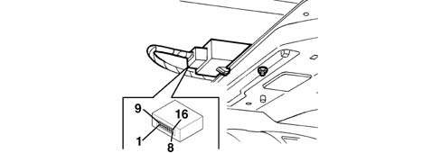
Connector, 16-way
PIN | SIGNAL |
|---|---|
relay | Turn signal control |
relay | Diagnostic line K and connection with alarm control unit |
3 | Direct power supply |
4 | Earth |
5 | Door release control |
6 | Door lock control |
7 | Supplied controlled by the ignition |
8 | Courtesy lights control (Outlets not connected on this version) |
9 | Electric windows control (Outlets not connected on this version) |
10 | Boot lid opening control |
11 | N.C. |
12 | N.C. |
13 | N.C. |
14 | N.C. |
15 | N.C. |
16 | N.C. |
For further details see the wiring diagrams, E7015 ALARM , E3040 CENTRAL LOCKING , E3046 BOOT OPENING .
Switches
The same switches as for the central locking system are used to control the doors and lids. For further details see wiring diagram E3040 CENTRAL LOCKING .
There is, however, a special switch in the bonnet lid lock.
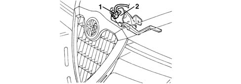
1 - Bonnet lid opening switch 2 - Bonnet lid lock
Volumetric sensors
The volumetric sensors allow additional surveillance because they check that there are no intrusions in the vehicle. These are located on two central car pillars
Both are 'dual' sensors, i.e. each consists of a transmitter and a receiver
The wave sent by a transmitter should reach the receiver of the other sensor and viceversa: if this is not the case, an alarm signal is sent to the control unit.
One pair monitors the front part of the passenger compartment, the other pair controls the rear, as shown in the following diagram: (E = transmitter C = receiver).
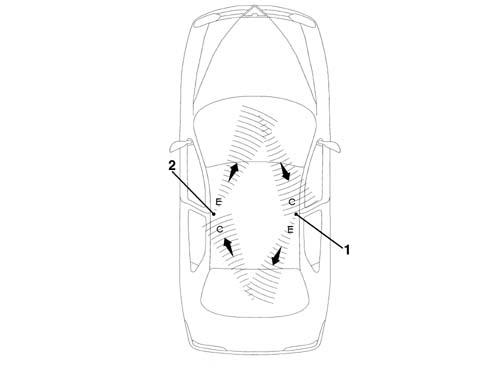
1 - Right-hand side volumetric sensor 2 - Left-hand side volumetric sensor
Deterrent led
The dissuasion LED is located in the dashboard, in the centre above the air vent and signals the state of the system (on, off, etc.) plus any faults.
Anti-tilt sensor
Compared with the system used previously, this version is also equipped with an anti-tilt control function which makes it possible to detect a change in the angle of the vehicle in order to avoid the vehicle being lifted up when not desired (e.g. for removing a wheel).
A special anti-tilt sensor is fixed inside the passenger compartment to a rigid point of the bodyshell detecting even the slightest variation in the vehicle geometry angle in relation to the longitudinal axis and the vertical axis.
Location
The anti-tilt sensor is fixed inside the passenger compartment, on the crossmember under the seat, passenger side.
It involves a fairly rigid point of the bodyshell: in this way it is not affected by bodyshell distortions following the raising of the vehicle and therefore signals the vehicle geometry variations with precision.
OPERATION
During the alarm system surveillance stage, the sensor detects any alerations in the angle of the vehicle, in both longitudinal and transverse directions.
It produces an alarm signal for the control unit if:
- a variation in the geometry angle greater than 0.5° per minute is detected and a variation of 3° in relation to the initial position
- a single wheel is raised off the ground, already starting with the tyre not in contact with the ground
Variations in geometry of less than 0.5°/min are not considered (these values correspond, for example, to the inflation of a punctured tyre or the relaxation of the suspension)
Operation of the system
Switching on
it is only possible to switch on the alarm with the ignition key in the OFF or PARK positions or with it extracted.
The alarm is activated by pressing the button in the remote control. It has an operating range of about 10 metres.
When the command has been given, the door locks are locked, the siren sounds and, at the same time, the direction indicators come on for about 2.5 seconds; the deterrent LED also flashes. the deterrent LED also flashes.
Deactivation
The alarm is switched off by pressing the remote control button.
When the command has been given, the doors are unlocked, the siren sounds briefly twice and, at the same time, the direction indicators flash twice.
Switching on with siren excluded
The operation of the siren can be excluded during the surveillance stage: when switching on, press the remote control button for more than 4 seconds.
After the auditory signals connected with the engagement, there are 5 auditory signals in quick succession to indicate that the siren has been excluded.
Next time it is switched on, the exclusion procedure is repeated, if the siren is to be excluded once again.
Excluding the system
The system can be deactivated with the emergency key (OFF position) if:
- the remote control batteries are run down
- the system is faulty
- the vehicle is not used for long periods (more than 3 weeks).
Surveillance stage
During the 'surveillance' stage (vehicle closed and alarm switched on), the deterrent LED flashes at a frequency of 0.8 Hz and, in this state, the system:
- surveys the closing of the doors, bonnet and boot lid;
- detects the condition of the connecting cables for the positive from the battery and earth;
- detects the condition of the connecting cables for the emergency key;
- detects the unauthorized insertion of the ignition key;
- surveys movements inside the passenger compartment (volumetric surveillance).
- surveys the lifting of the vehicle (anti-tilt).
Alarm state
The alarm comes into operation when one of the surveillance sensors detects an irregular situation.
The alarm state (if the cause of the alarm persists) can be recognized as follows:
- the siren is activated (for a maximum of three cycles lasting 26 seconds)
- the direction indicators are activated for about 4-5 minutes (only in countries where the law permits)
It is possible to escape from the alarm situation:
- by pressing the remote control button;
- by deactivating the emergency key (in this case, the control unit remains in the 'surveillance' condition).
This second procedure should only be used if it is not possible to escape from the alarm situation by pressing the remote control button.
Inhibiting volumetric surveillance
It is possible to inhibit the volumetric surveillance, before switching the system on. Proceed as follows:
- starting with the ignition key in the ON position, turn in quickly to OFF, ON and then OFF.
The exclusion of the volumetric surveillance is confirmed by the deterrent LED coming on for 2 seconds.
When the ignition key is next switched ON (for more than 30 seconds) the volumetric surveillance will be re-enabled. This period of 30 seconds allows, for example, the electric windows to be closed, which, if they have been left open by mistake, will maintain the exclusion of the volumetric surveillance.
Alarm self-activation (only belgian and uk markets)
Cars with alarms programmed for the Belgian and UK markets are equipped with self-activation function.
This function ensures that the alarm is automatically partly engaged (the doors are not locked): the alarm is engaged 28 seconds after the customer leaves the vehicle, in other words after the system has detected the following sequential conditions:
- ignition key turned from ON to OFF;
- last open door opened and then closed.
The opening of any door, or the bonnet lid or the boot lid, before the delay period (28 seconds) has elapsed stops the automatic engagement. The closure restores the counting, starting, however, from zero.
To regain possession of the vehicle after the auto-engagement, simply press the remote control button once.
Signalling of remote control batteries discharged
The signal involves the remote control LED giving one brief flash when the button is pressed.
When this signal occurs, the batteries should be replaced as soon as possible.
After the batteries have been replaced, the LED will work properly after the second time the button is pressed.
The deterrent LED also signals that the remote control batteries are run down by coming on constantly for a maximum of 2 minutes when the system is switched off.
'country code' programming
The control unit is capable of adapting its operation to the laws governing alarm systems in force in the various markets. There are different operating modes ('COUNTRY CODE') available in the actual control unit memory for the sound of the siren and the flashing of the direction indicators. These functions are sometimes excluded.
The 'EEC' operating mode is selected in production.
To change this setting, it is possible to use the special procedure using the Examiner or other diagnostic equipment.
Alternatively, and only in the case of an emergency, the following procedure can be used:
- Check that the emergency key is switched ON;
- turn the ignition key to the ON position.
- Open the bonnet (front) lid.
- Turn the ignition key from ON to OFF.
- Within 15 seconds, press the bonnet lid button 7 times in quick succession. This manoeuvre should be carried out in less than 10 seconds. The last time the button is pressed, keep it pressed;
- 5 brief auditory signals (5 in 2 seconds) followed by one long one (lasting 2 secnods) indicate the entry in the operating mode programming.
- Release the bonnet lid button.
- Within the next 10 seconds, press and release the button a number of times equivalent to the desired country identification number, given in the table below (each time the button is pressed there will be an auditory confirmation signal);
- Wait for 10 seconds; an auditory signal lasting a second will indicate the exit from the programming mode system.
COUNTRY CODE TABLE
Code | Country |
|---|---|
1 | 1 Default (EEC) |
2 | United Kingdom |
3 | Belgium |
4 | Switzerland |
5 | Holland |
6 | WORLD |
System self-testing
Both the control unit and the receiver are equipped with a self-test function.
When the alarm is switched on, the operation of the system is continuously checked.
when the system is switched on an autodiagnosis is carried out which can be recognized by the LED flashing, in accordance with the table below:
FLASHING MODES | MEANING |
|---|---|
4 Hz (=4 flashes per second) | No fault detected |
8 Hz (=8 flashes per second) | Door/bonnet/boot open or switch faulty |
Light on constantly | Volumetric sensors faulty |
If a fault is detected, the component in question is excluded from the surveillance and an auditory warning signal is emitted one second after engagement.
When the system is switched off, this is indicated by the LED for the sensor which set off the alarm during the surveillance flashing, in accordance with the details in the table below:
NO. IMPULSES | ALARM COMPONENTS |
|---|---|
1 Impulse | Right front door |
2 Impulses | Left front door |
3 Impulses | Right rear door |
4 Impulses | Left rear door |
5 Impulses | Volumetric and anti-tilt sensor |
6 Impulses | Bonnet lid |
7 Impulses | Boot |
8 Impulses | Supplied controlled by the ignition |
9 Impulses | Supply cables cut |
10 Impulses | At least 3 simultaneous causes of the alarm |
Light on constantly | Remote control batteries run down |
An impulse consists of a flash at a frequency of 1 Hz (1 flash per second).
If several causes for the alarm are detected, the blink codes occur in orders, with an interval of 1.5 secs in between.
If the ignition key is turned to the ON position, the signal is interrupted.
Use of the examiner or other tester
Ths system has its own diagnostic line and it is therefore possible to detect information stored in the control unit and receiver memories using the Examiner or other diagnostic equipment.
The control unit and the receiver provide information concerning their tate and recognize any irregularities in all the system components and connections.
Once the faults have been repaired, it is posible to cancel the faults memorized by the control unit.
It is also possible to carry out the remote control programming procedures, using the Examiner, following the instructions given below.
Manual diagnosis
It is possible to carry out a manual diagnosis of the entire system, in cases of emergency, if an Examiner or other diagnostic equipment is not available.
Proceed as follows:
- Close the doors, windows, boot lid and bonnet.
- Check that the emergency key is switched ON.
- Turn the ignition key to the ON position.
- Open the bonnet
- Turn the ignition key from ON to OFF.
- Within 15 seconds, press the bonnet lid button 7 times in quick succession. This manoeuvre should be carried out in less than 10 seconds. Release the button the last time it is pressed.
- 5 brief auditory signals and a flash of the direction indictors indicate the entry in the 'manual diagnosis' mode.
After several seconds the result of the volumetric sensors fault diagnosis is given:
- i- f the direction indicators flash once only, there is a fault in the volumetric sensors;
- if the direction indicators flash 3 times and there are three auditory signals, then there are no faults with the volumetric sensors
Operate the switches for the doors and lids, one at a time:
- if the direction indicators and the deterrent LED flash briefly for each change in state of the switch, then there is no fault with the switch in question
- if there is no signal from the direction indicators and the deterrent LED for each change in state of the switch, and there are no auditory signals, then there is a fault with the switch in question.
Exit the manual diagnosis procedure by turning the ignition key to the ON position. There will be an auditory signal from the siren (500 msecs) and the direction indicators will flash (2.5 secs); it is also possible to exit from manual diagnosis by doing nothing for 30 secs
The exit is signalled by the direction indicators coming on for about 2.5 secs and an auditory signal.
Data base
There is a centralized DATA BASE (for all markets) managed by the PARTS DEPT. for ordering somel system components.
- receiver
- keys
The production plant transfers all the details needed into this DATA BASE together with the chassis number of the new vehicle.
This PARTS DATA BASE should be used by the Service Network for ordering replacement components.
The DATA BASE contains various information, including:
- vehicle chassis number;
- ID1, ID2, (up to a maximum of 8)
- PASSWORD
- mechanical key code
Intervention procedures
Loss of key(s)
Ask the customer for all the keys remaining in his possession. He should also prove that he owns the vehicle by showing the registration document and a valid identity document.
Carry out the PROGRAMMING OF THE remaining KEYS using the Examiner or other diagnostic equipment, working in the Code control unit. In this way keys which have not been presented will never be able to be used. A list of keys which are still valid will also be printed.
Programme the remaining REMOTE CONTROLS using the Examiner or another diagnostic instrument, working on the alarm control unit. In this way keys which have not been presented will no longer be able to be used.
Connect with FIAT PARTS giving the vehicle chassis number and other details as requested. Place an order for one or several keys, for the vehicle in question.
By consulting the DATA BASE and on the basis of the chassis number, FIAT PARTS can make a key which has:
- the same shape (although indicating that it is a replacement part)
- Transponder with new ID3 , but with secret code of the Code control unit of the vehicle in question.
- same mechanical code (metal insert).
- new remote control codes TX3 .
In addition, the DATA BASE is updated by the entry of the new ID3 .
FIAT PARTS should send the key to the Service Network within 24 - 48 hours.
Programme the keys using the Examiner or another diagnostic instsrument, working on the Code control unit, entering both the new key(s) and the previous key(s).
MEMORIZE THE REMOTE CONTROLS using the Examiner or another diagnostic instrument, working on the alarm control unit, entering both the new key(s) and the previous key(s).
Conduct a final check on both the Code system and the alarm system using the Examiner or other diagnostic equipment
Requesting a new key
Up to 5 keys (remote controls) can be programmed in one receiver.
Proceed as described above, skipping step 2 which in this case is superfluous.
Replacing key lock barrels
Ask the customer for all the keys remaining in his possession. He should also prove that he owns the vehicle by showing the registration document and a valid identity document.
2.CANCEL THE MEMORIZED KEYS using the Examiner or another diagnostic instrument, working on the Code control unit and not the alarm control unit. These keys will never be able to be used again.
Connect with FIAT PARTS giving the vehicle chassis number and other details as requested. Place an order for a complete key kit for the vehicle in question.
By consulting the DATA BASE and on the basis of the chassis number, FIAT PARTS can make a complete key kit which has:
- the same shape (although indicating that it is a replacement part)
- Transponder with new ID3 . ID4 , but with the secret code for the Code control unit for the vehicle in question.
- new mechanical code (metal insert).
- new remote control codes TX3 . TX4 .
A new Code Card, with the previous recovery code but a new mechanical code, is also supplied.
In addition the DATA BASE is updated by the entry of the new ID3 and ID4 and the new mechanical code.
FIAT PARTS should send the key kit to the Service Network within 24-48 hours.
Programme the KEYS using the Examiner or another diagnostic instrument, working on the Code control unit, entering all the keys received.
MEMORIZE THE REMOTE CONTROLS using the Examiner or other diagnostic instrument, working on the alarm control unit, entering all the keys received.
Conduct a final check on both the Code system and the alarm system using the Examiner or other diagnostic equipment
Replacing the receiver
A suspected fault in the receiver should always be confirmed by carrying out a thorough check using the Examiner or other diagnostic equipment.
Ask the customer for all the keys remaining in his possession. He must also prove that he owns the car by showing the registration document and a valid identity document.
Connect with FIAT PARTS giving the vehicle chassis number and other details as requested. Place an order for a receiver.
FIAT PARTS should send a new, unprogrammed, receiver.
Fit the receiver in place of the fault one.
PROGRAMME THE REMOTE CONTROLS using the Examiner or other diagnostic equipment, working on the alarm control unit and not the Code control unit, entering all the keys present.
Conduct a final check on the alarm system using the Examiner or other diagnostic equipment.
Replacing the alarm control unit
A suspected fault in the alarm control unit must always be confirmed by a thorough check carried out using the Examiner or another diagnostic instrument.
If the alarm control unit is replaced, it is NOT necessary to PROGRAMME THE REMOTE CONTROLS using the Examiner or other diagnostic equipment, but simply to carry out the simplified CONTROL UNIT PROGRAMMING procedure which 'passes over' all the data and codes in the receiver to the new control unit.
If the control unit is replaced, conduct a final check on the alarm system using the Examiner or other diagnostic equipment.
Topics linked from this page (4)
Topics that link to this page (14)
- Introduction - ENGINE STARTING
- Introduction - INSTRUMENT PANEL
- E7010 CODE - Description
- E7010 CODE - Description
- E7010 CODE - Description
- E7010 CODE - Description
- E7015 ALARM - Description
- E7015 ALARM - Description
- E7015 ALARM - Description
- E7015 ALARM - Description
- E7015 ALARM - Description
- E7015 ALARM - Description
- E7015 ALARM - Description
- E7015 ALARM - Description